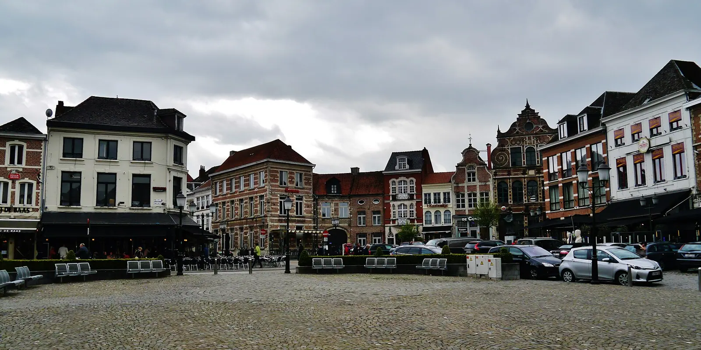
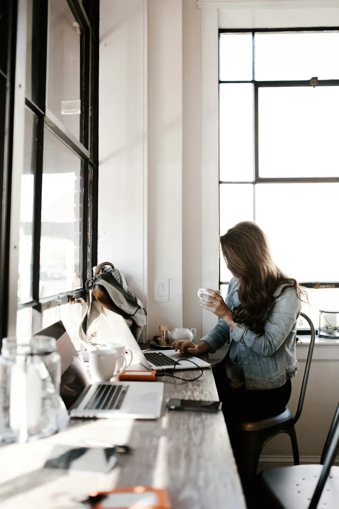
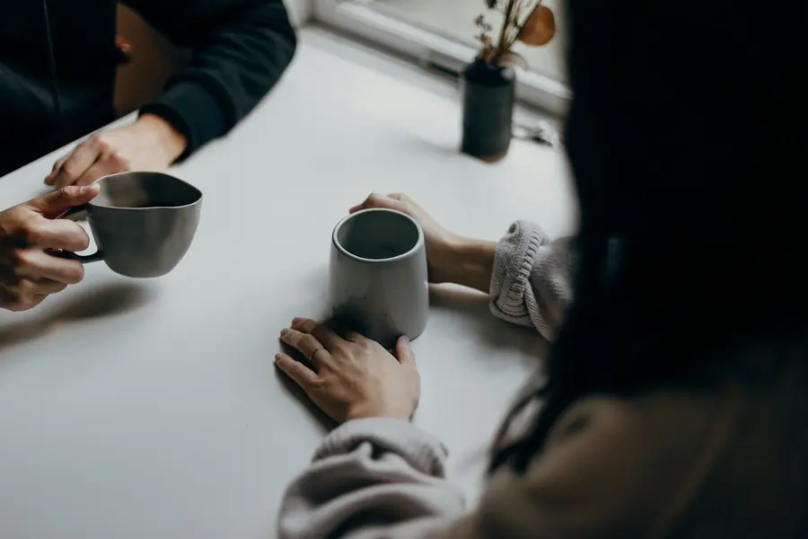
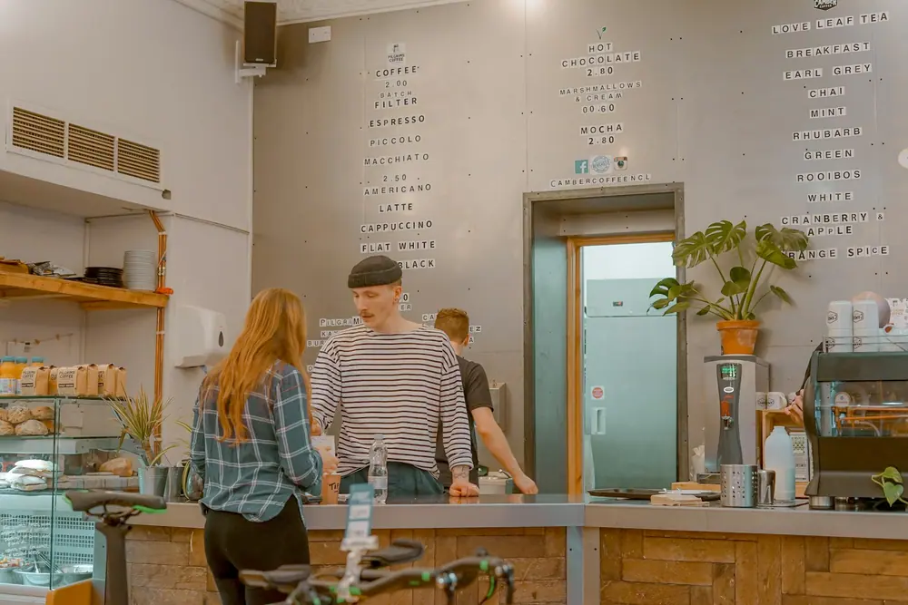
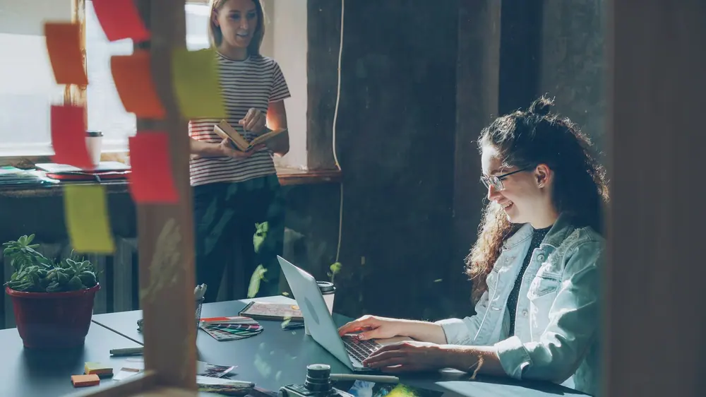
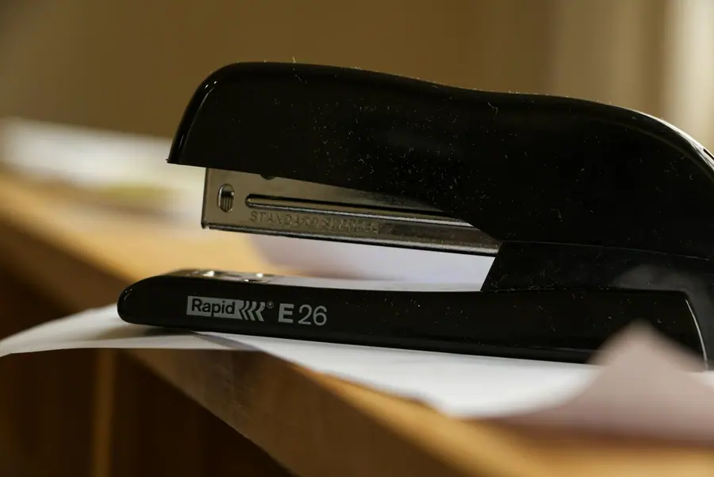
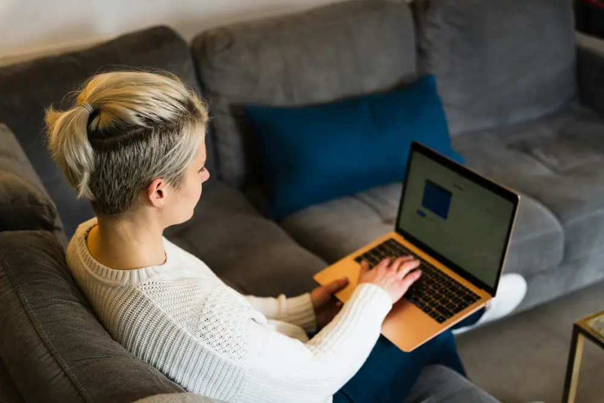
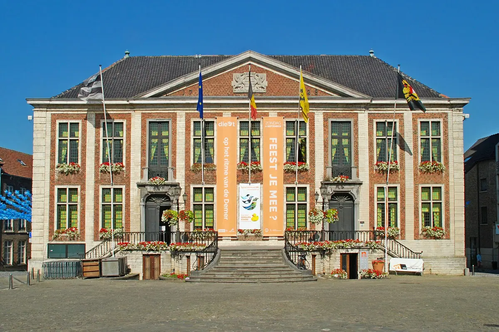

Boekhouding en aangiftes
- Verwerking van uw boekhouding
- Indienen van fiscale aangiftes
- Neerleggen van jaarrekeningen
Uw vertrouwenspersoon in Diest. Wij werken met cijfers, maar de ondernemer staat centraal. Ons team staat voor u klaar met praktisch advies en denkt met u mee.

Klik op een letter en lees waarmee we u helpen. Van uw eerste aangifte tot uw omzet van volgend jaar.
Voor eenmanszaken, vennootschappen en vzw's in Diest en de omliggende gemeenten.


Boekhoudkantoor Jean Luyten is een familiebedrijf dat veel waarde hecht aan een persoonlijke aanpak. Geen nummer in een groot kantoor, wel mensen die weten wie u bent.
Elke ondernemer heeft andere vragen. Dit zijn de mensen die we het vaakst helpen.

01StartersVan idee tot inschrijving, met een plan dat klopt.
Uw boekhouding en aangiftes, netjes op tijd.

03VennootschappenJaarrekening, vennootschapsbelasting en advies.

04Vzw'sRechtspersonenbelasting en een correcte opvolging.

05Zelf boekersU voert zelf de boekhouding, wij kijken mee.

Bel gerust tijdens deze uren. Langskomen kan op afspraak.
| Maandag | 9u tot 12u, 13u tot 17u |
| Dinsdag | 9u tot 12u, 13u tot 17u |
| Woensdag | 9u tot 12u |
| Donderdag | 9u tot 12u, 13u tot 17u |
| Vrijdag | 9u tot 12u |
| Weekend | Gesloten |
Ja. Wie zijn boekhouding zelf wil voeren, kan bij ons terecht voor begeleiding en advies. Wij nemen de aangiftes en de jaarafsluiting op ons.
Bel ons zo snel mogelijk. We bekijken samen wat er gevraagd wordt en staan u bij tijdens de controle.
Zeker. We begeleiden vzw's bij de oprichting en volgen hun boekhouding en rechtspersonenbelasting op.
Daar helpen we u mee. We leggen uit wat u in België moet regelen en volgen uw btw en aangiftes op.
Uw identiteitskaart, eventueel uw ondernemingsnummer en de laatste aangiftes die u hebt. Hebt u nog niets? Geen probleem, dan beginnen we bij het begin.
Bel, mail of laat uw gegevens achter. We maken graag tijd om uw situatie te bekijken.
Ik maakte deze demo voor u om te tonen wat er kan. Na een kort gesprek maak ik er iets veel persoonlijkers van, helemaal naar uw wens.
Vrijblijvend. Ik kom langs of we bellen.
Op maat, op uw eigen domein.
Geen voorschot. U betaalt pas als alles klaar is.
Hosting, domeinnaam en kleine wijzigingen, zoals nieuwe openingsuren.
Omdat een voorbeeld meer zegt dan een mail. Zo ziet u meteen wat er kan, en het kost u niets.
Nee. Het gesprek is vrijblijvend. Vindt u het niks, dan is het daarmee gedaan.
Na ons gesprek staat uw site binnen 10 tot 14 dagen online.
Zeker. Uw domeinnaam kan gewoon blijven, de nieuwe site komt in de plaats van de oude.
Nee, dat doe ik op basis van ons gesprek. Eigen foto's zijn mooi meegenomen, maar niet nodig om te starten.